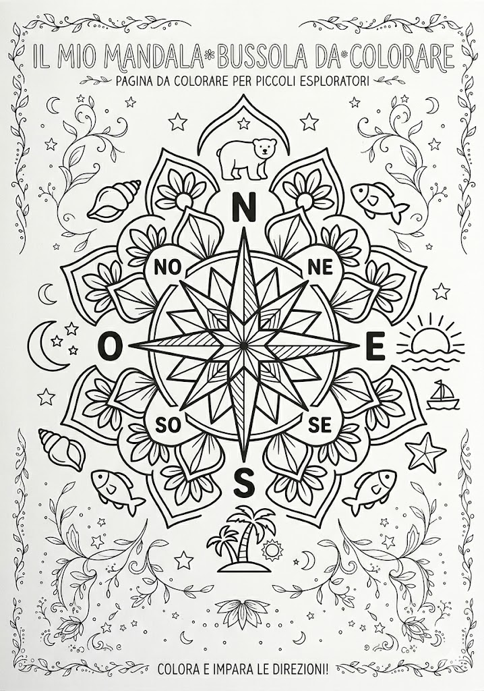

Protezione CivileGruppo Comunale Volontari — Genzano di Roma
Bambini · 3-5 anni
Il mio mandala bussola
3-5 anni🧭 Colora il mandala e impara le 4 direzioni: Nord, Sud, Est, Ovest. Quando coloriamo con calma, il cuore si rilassa.
